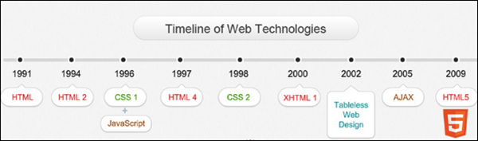

¿Qué es HTML?
HTML hace referencia al lenguaje de marcado para la elaboración de páginas web. Es un estándar que sirve de referencia del software que conecta con la elaboración de páginas web en sus diferentes versiones, define una estructura básica y un código (denominado código HTML) para la definición de contenido de una página web, como texto, imágenes, videos, juegos, entre otros.
Historia del HTML
El origen del lenguaje HTML se remonta al físico Tim Berners-Lee, quien a finales de 1989 propuso el lenguaje HTML junto con el protocolo HTTP, cuya finalidad era crear un medio para poder compartir información entre diversos «grandes» físicos de la época que trabajaban por todo el mundo.
El primer documento sobre la estructura del HTML se publicó en el año de 1991 con el nombre de: «HTML Tags», en él se explicaban las etiquetas del HTML.
El primero en salir fue el HTML 1, sin embargo no fue considerado un estándar, por lo que muchas veces se considera al HTML 2 como la primera versión del HTML.
El HTML 2 fue presentado en el 1995; no soportaba tablas y la declaración explícita de los elementos body, html y head era opcional.
La versión HTML 3.2 se lanzó en el 1997 e incorporó los últimos avances de las páginas web como applets de Java y texto que fluye alrededor de las imágenes.
La versión 4.0 fue lanzada en 1998. Entre sus novedades más destacadas se encuentran las hojas de estilos CSS, la posibilidad de incluir pequeños programas o scripts en las páginas web, mejora de la accesibilidad de las páginas diseñadas, tablas complejas y mejoras en los formularios.
La 4.01 salió a la luz en 1999 como una revisión y actualización de la versión HTML 4.0, por lo que no incluye novedades significativas.
Por último, el HTML 5, en del que veremos la estructura en el siguiente apartado.

La estructura del HTML
Una posible estructura básica sería la siguientes (posible porque no son obligatorias todas estas etiquetas.)
<!DOCTYPE html>
<html lang="es">
<head>
<meta charset="utf-8"/>
<title>Hola Mundo!</title>
</head>
<body>
<header>
</header>
<main>
<section>
<article>
</article>
</section>
<aside>
</aside>
</main>
</body>
<footer>
</footer>
</html>
La primera etiqueta, <!DOCTYPE html>, declara el tipo de documento que se va a mostrar, que será un documento html.
La segunda <!DOCTYPE html>, indica la lengua del documento, en este caso, español. La tercera etiqueta es <head>
que indica que se abre la cabecera, donde se situan los metadatos del documento, las hojas de estilo y el código Javascript;
dentro de esta esta la etiqueta se encuantra otra etiqueta, <meta charset="utf-8"/>, que es obligatoria en HTML 5
e indica el formato de codificación de caracteres, esta se cierra en la misma etiqueta que se abre. Dentro de la cabecera
también se incluye el título de la página dentro de la etiqueta <title> y después se cierra con </head>.
Ahora abrimos el cuerpo de la página con la etiqueta <body>; aquí se situará el contenido de la página, que incluirá
un header (<header> y </header>), con el logo y el título, por ejemplo; y el contenido principal
podría aparecer dentro de etiquetas main (<main> </main>) dividido en secciones (<section> </section>),
artículos (<article> </article>), barras laterales (<aside> </aside>), etc. Por último cabe
decir que los menús se incluirían entre etiquetas <nav> y </nav>y que la página la cerrará un pie de página
que se enmarcará dentro de las etiquetas <footer> y </footer> después de haber cerrado el cuerpo con </body>.
En este momento, se cierran la etiqueta del principio que indicaba que este documento es html con </html>.